Umetanje autoshape oblika
Umetanje autoshape oblika
Da biste dodali autoshape oblik u Document Editor,
- prebacite se na karticu Insert u gornjoj traci sa alatkama,
- kliknite na ikonicu Oblik u gornjoj traci sa alatkama,
- izaberite jednu od dostupnih grupa autoshape oblika iz Galerije oblika: Nedavno korišćeno, Osnovni oblici, Figurisane strelice, Matematika, Grafikoni, Zvezde i trake, Oznake, Dugmad, Pravougaonici, Linije,
- kliknite na potreban autoshape unutar izabrane grupe,
- postavite kursor miša na mesto gde oblik treba da se doda,
-
kada je autoshape dodat, možete promeniti njegovu veličinu, poziciju i osobine.
Napomena: da biste dodali natpis autoshape obliku, proverite da li je odgovarajući oblik izabran na stranici i počnite da kucate tekst. Dodati tekst postaje deo autoshape oblika (kada pomerate ili rotirate oblik, tekst se pomera ili rotira zajedno sa njim).
Možete takođe dodati natpis autoshape obliku. Za više informacija o radu sa natpisima, pogledajte ovaj članak.
Pomeranje i promena veličine autoshape oblika
Da biste promenili veličinu autoshape oblika, prevucite male kvadrate koji se nalaze na ivicama oblika. Da biste zadržali originalne proporcije izabranog oblika dok ga menjate, držite Shift taster i prevucite jedan od uglova.
Kod nekih oblika, na primer figurisane strelice ili oznake, dostupan je i žuti dijamantski indikator. On omogućava podešavanje određenih aspekata oblika, na primer dužine glave strelice.
Da biste promenili poziciju autoshape oblika, koristite ikonu koja se pojavljuje kada pređete mišem preko oblika. Prevucite oblik na željenu poziciju bez puštanja tastera miša. Kada pomerate oblik, linije vodiči se prikazuju kako bi vam pomogle da precizno pozicionirate objekat na stranici (ako izabrani stil umotavanja nije inline). Da biste pomerali oblik po jednom pikselu, držite Ctrl taster i koristite strelice na tastaturi. Da biste pomerali oblik striktno horizontalno/vertikalno i sprečili kretanje u suprotnoj osi, držite Shift taster dok prevlačite.
Da biste rotirali autoshape oblik, pređite mišem preko ručice za rotaciju i prevucite u smeru kazaljke na satu ili suprotno od nje. Da biste ograničili ugao rotacije na korake od 15 stepeni, držite Shift taster dok rotirate.
Napomena: lista prečica na tastaturi koje možete koristiti prilikom rada sa objektima dostupna je ovde.
Kopiranje formata autoshape oblika
Da biste kopirali određeni format autoshape oblika,
- izaberite autoshape čiji format želite da kopirate pomoću miša ili tastature,
- kliknite na ikonu Kopiraj format na kartici Home u gornjoj traci sa alatkama (kursor će izgledati ovako ),
- izaberite autoshape na koji želite da primenite isti format.
Podešavanje autoshape oblika
- Iseci, Kopiraj, Nalepi - standardne opcije koje služe za sečenje ili kopiranje izabranog teksta/objekta i lepljenje prethodno isečenog/kopiranog teksta ili objekta na trenutnu poziciju kursora.
- Štampaj selekciju - koristi se za štampanje samo izabranog dela dokumenta.
- Prihvati / Odbaci izmene - koristi se za prihvatanje ili odbacivanje praćenih izmena u deljenom dokumentu.
-
Uredi tačke - koristi se za prilagođavanje ili promenu zakrivljenosti oblika.
- Da biste aktivirali tačke za uređivanje oblika, kliknite desnim tasterom na oblik i izaberite Uredi tačke iz menija ili kliknite na opciju Uredi oblik > Uredi tačke u desnom panelu. Crni kvadrati koji postanu aktivni označavaju mesta gde se spajaju dve linije, a crvena linija obeležava oblik. Kliknite i prevucite kvadrat da biste promenili poziciju tačke i oblik linije.
-
Kada kliknete na tačku, pojaviće se dve plave linije sa belim kvadratima na krajevima. To su Bezier ručke koje omogućavaju kreiranje krivina i promenu glatkoće krivine.
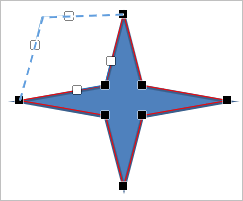
-
Dok su tačke aktivne, možete dodavati ili brisati tačke.
Da dodate tačku na oblik, držite Ctrl i kliknite na mesto gde želite da dodate tačku.
Da obrišete tačku, držite Ctrl i kliknite na nepotrebnu tačku.
- Rasporedi - koristi se za slanje izabranog oblika u prvi plan, u pozadinu, pomeranje unapred ili unazad, kao i grupisanje ili razgrupisavanje oblika kako biste mogli da radite sa više njih odjednom. Za više informacija o raspoređivanju objekata pogledajte ovu stranicu.
- Poravnaj - koristi se za poravnanje oblika levo, centar, desno, na vrh, sredinu, dno. Za više informacija o poravnanju objekata pogledajte ovu stranicu.
- Stil omotavanja - koristi se za izbor stila omotavanja teksta iz dostupnih opcija: inline, kvadrat, čvrsto, kroz, gore-dole, ispred, iza - ili za uređivanje granica omotavanja. Opcija Uredi granicu omotavanja je dostupna samo ako izaberete stil omotavanja različit od Inline. Prevucite tačke omotavanja da prilagodite granicu. Da biste kreirali novu tačku omotavanja, kliknite bilo gde na crvenoj liniji i prevucite je na željenu poziciju.
- Rotiraj - koristi se za rotiranje oblika za 90 stepeni u smeru kazaljke na satu ili suprotno, kao i za horizontalno ili vertikalno preklapanje oblika.
- Sačuvaj kao sliku - koristi se za čuvanje oblika kao slike na vašem disku.
- Napredne postavke oblika - koristi se za otvaranje prozora 'Oblik - Napredne postavke'.
Neke od postavki autoshape oblika mogu se menjati preko kartice Postavke oblika u desnom bočnom panelu. Da biste je aktivirali, kliknite na oblik i izaberite ikonu Postavke oblika sa desne strane. Ovde možete promeniti sledeće osobine:
-
Popuna - koristite ovaj odeljak da izaberete popunu autoshape oblika. Možete izabrati sledeće opcije:
-
Boja popune - izaberite ovu opciju da odredite čvrstu boju kojom ćete popuniti unutrašnji prostor izabranog autoshape oblika.

Kliknite na obojeni kvadrat ispod i izaberite potrebnu boju iz dostupnih skupova boja ili odredite bilo koju boju po želji.
-
Gradijentna popuna - koristite ovu opciju da popunite oblik sa dve ili više boja koje prelaze jedna u drugu. Prilagodite gradijent bez ograničenja. Kliknite na ikonu Postavke oblika da otvorite meni Popuna u desnom panelu:

Dostupne opcije u meniju:
-
Stil - izaberite između Linearni ili Radijalni:
- Linearni se koristi kada želite da boje prelaze sa leve na desnu, sa vrha na dno ili pod bilo kojim uglom u jednom pravcu. Prozor pregleda Smer prikazuje izabrani gradijent, kliknite na strelicu da izaberete unapred podešen pravac gradijenta. Koristite Ugao za precizno podešavanje ugla gradijenta.
- Radijalni se koristi da boje zrače iz centra počevši od jedne tačke ka spolja.
-
Tačke gradijenta su specifične tačke za prelaz između boja.
- Koristite dugme Dodaj tačku gradijenta ili klizač da biste dodali tačku gradijenta. Možete dodati do 10 tačaka. Svaka sledeća tačka ne menja postojeći izgled gradijenta. Koristite dugme Ukloni tačku gradijenta za brisanje određene tačke.
- Koristite klizač da promenite poziciju tačke gradijenta ili precizno unesite Poziciju u procentima.
- Da biste primenili boju na tačku gradijenta, kliknite na tačku na klizaču, a zatim kliknite Boja da izaberete željenu boju.
-
Stil - izaberite između Linearni ili Radijalni:
-
Slika ili tekstura - izaberite ovu opciju da koristite sliku ili unapred definisanu teksturu kao pozadinu oblika.
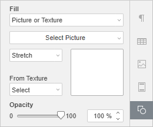
- Ako želite da koristite sliku kao pozadinu oblika, otvorite padajući meni Izaberi sliku; ovde možete dodati sliku Iz fajla birajući je sa hard diska, Iz URL-a unošenjem odgovarajuće URL adrese u otvoreni prozor, ili Iz skladišta biranjem slike sa vašeg portala.
-
Ako želite da koristite teksturu kao pozadinu oblika, otvorite meni Iz teksture i izaberite željeni unapred definisani predložak teksture.
Trenutno su dostupne sledeće teksture: canvas, karton, tamna tkanina, zrno, granit, sivi papir, pleteno, koža, braon papir, papirus, drvo.
-
Ako izabrana Slika ima manje ili veće dimenzije od samog oblika, možete iz padajućeg menija izabrati opciju Proširi ili Ponovi.
Opcija Proširi omogućava prilagođavanje veličine slike tako da potpuno popuni oblik.
Opcija Ponovi omogućava prikaz samo dela veće slike zadržavajući njene originalne dimenzije ili ponavljanje manje slike po površini oblika tako da prostor bude potpuno popunjen.
Napomena: bilo koji izabrani predložak Tekstura potpuno popunjava prostor, ali možete primeniti efekat Proširi ako je potrebno.
-
Šablon - izaberite ovu opciju da popunite oblik dvobojnim dizajnom sa redovno ponovljenim elementima.
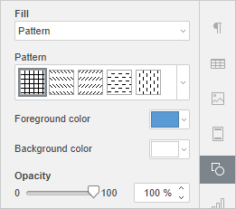
- Šablon - izaberite jedan od unapred definisanih dizajna iz menija.
- Boja prednjeg plana - kliknite na ovu kutiju da promenite boju elemenata šablona.
- Boja pozadine - kliknite na ovu kutiju da promenite boju pozadine šablona.
- Bez popune - izaberite ovu opciju ako ne želite da koristite popunu.
-
Boja popune - izaberite ovu opciju da odredite čvrstu boju kojom ćete popuniti unutrašnji prostor izabranog autoshape oblika.
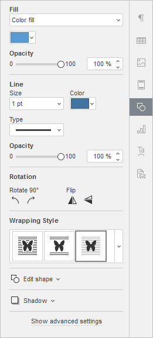
- Prozirnost - koristite ovu sekciju da podesite nivo prozirnosti prevlačenjem klizača ili unosom procenta ručno. Podrazumevana vrednost je 100%, što odgovara potpunoj neprozirnosti. Vrednost 0% odgovara potpunoj transparentnosti.
-
Linija - koristite ovu sekciju da promenite širinu, boju ili tip linije oblika.
- Za promenu širine linije, izaberite jednu od dostupnih opcija iz padajućeg menija Veličina. Dostupne opcije su: 0.5 pt, 1 pt, 1.5 pt, 2.25 pt, 3 pt, 4.5 pt, 6 pt. Alternativno, izaberite opciju Bez linije ako ne želite koristiti liniju.
- Za promenu boje linije, kliknite na kutiju sa bojom i izaberite željenu boju.
- Za promenu tipa linije, izaberite željenu opciju iz odgovarajućeg padajućeg menija (po defaultu je primenjena puna linija, možete je promeniti u neku od dostupnih isprekidanih linija).
- Za promenu prozirnosti linije, unesite željenu vrednost ručno ili koristite klizač.
-
Rotacija - koristi se za rotiranje oblika za 90 stepeni u smeru kazaljke ili suprotno, kao i za horizontalno ili vertikalno okretanje oblika. Kliknite na jedan od dugmadi:
- za rotiranje oblika 90° suprotno od kazaljke na satu
- za rotiranje oblika 90° u smeru kazaljke na satu
- za horizontalno okretanje oblika (levo-desno)
- za vertikalno okretanje oblika (gore-dole)
- Stil omotavanja teksta - koristite ovu sekciju da izaberete stil omotavanja teksta od dostupnih opcija: u liniji, kvadrat, zategnuto, kroz, gore i dole, ispred, iza (za više informacija pogledajte opis naprednih podešavanja).
- Izmeni oblik - koristite ovu sekciju za uređivanje tačaka oblika ili zamenu trenutnog oblika drugim iz padajućeg menija.
-
Izmeni tačke - koristi se za prilagođavanje ili promenu krivine oblika.
- Kada kliknete na tačku sidra, pojaviće se dve plave linije sa belim kvadratima na krajevima. Ovo su Bezier ručke koje omogućavaju kreiranje krive i promenu njene glatkoće.
-
Dok su tačke sidra aktivne, možete ih dodavati i brisati.
Za dodavanje tačke, držite Ctrl i kliknite na poziciju gde želite da dodate tačku.
Za brisanje tačke, držite Ctrl i kliknite na nepotrebnu tačku.
- Promeni oblik - koristi se za zamenu trenutnog oblika. Izaberite drugi oblik iz padajućeg menija.
-
Izmeni tačke - koristi se za prilagođavanje ili promenu krivine oblika.
-
Sena - otvorite ovaj meni da izaberete jedan od unapred definisanih stilova senke za oblik.
- Bez senke - poništite ovu opciju da prikažete senku, ili obrnuto.
- Boja - izaberite jednu od dostupnih boja sa palete Tema boja ili Standardne boje; koristite alatku Kap po kap da kopirate boju sa drugih objekata u dokumentu; ili kliknite na Više boja da kreirate prilagođenu boju.
-
Podesi senku - kreirajte prilagođenu senku koristeći sledeće klizače:
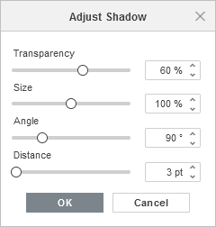
- Prozirnost - prilagodite prozirnost senke.
- Veličina - prilagodite veličinu senke.
- Ugao - prilagodite ugao senke u odnosu na objekat.
- Razdaljina - prilagodite razdaljinu senke od objekta.
Podešavanje naprednih opcija autobloka
Da biste promenili napredna podešavanja autobloka, kliknite desnim tasterom miša na njega i izaberite opciju Napredna podešavanja u meniju, ili koristite link Prikaži napredna podešavanja na desnoj bočnoj traci. Otvoriće se prozor 'Oblik – Napredna podešavanja':
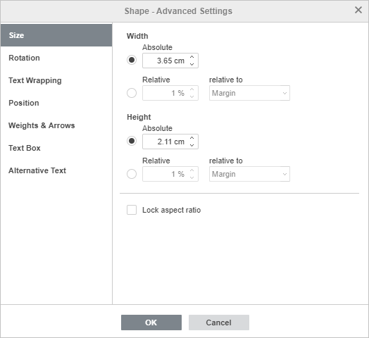
Tab Veličina sadrži sledeće parametre:
-
Širina - koristite jednu od opcija za promenu širine autobloka.
- Apsolutna - navedite tačnu vrednost u apsolutnim jedinicama, npr. centimetri/poeni/inci (zavisno od podešavanja na Fajl -> Napredna podešavanja... tabu).
- Relativna - navedite procenat u odnosu na levi margin, marginu (udaljenost između levog i desnog margina), stranicu ili desni margin.
-
Visina - koristite jednu od opcija za promenu visine autobloka.
- Apsolutna - navedite tačnu vrednost u apsolutnim jedinicama, npr. centimetri/poeni/inci (zavisno od podešavanja na Fajl -> Napredna podešavanja... tabu).
- Relativna - navedite procenat u odnosu na marginu (udaljenost između gornjeg i donjeg margina), donji margin, visinu stranice ili gornji margin.
- Ako je opcija Zaključaj odnos širine i visine čekirana, širina i visina će se menjati zajedno, zadržavajući originalni odnos dimenzija.
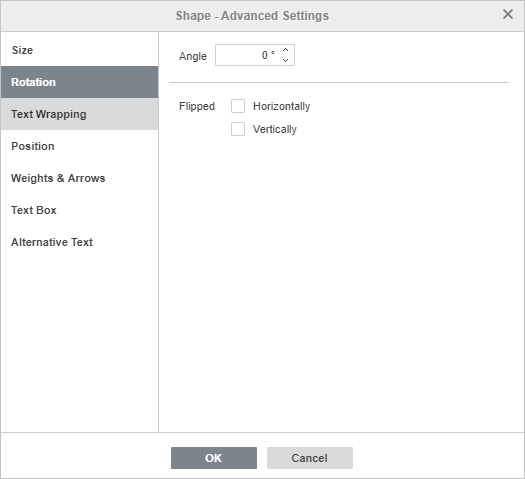
Tab Rotacija sadrži sledeće parametre:
- Ugao - koristite ovu opciju da rotirate oblik za tačno određeni ugao. Unesite potrebnu vrednost u stepene u polje ili podesite strelicama sa desne strane.
- Obrnuto - čekirajte polje Horizontalno da biste preokrenuli oblik horizontalno (levo-desno) ili polje Vertikalno da biste ga preokrenuli vertikalno (naopako).
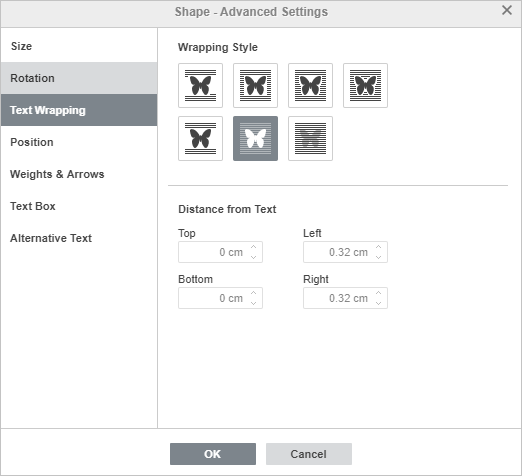
Tab Prelamanje teksta sadrži sledeće parametre:
-
Stil prelamanja - koristite ovu opciju da promenite način pozicioniranja oblika u odnosu na tekst: oblik može biti deo teksta (ako izaberete inline stil) ili se tekst omotava oko njega sa svih strana (ako izaberete jedan od ostalih stilova).
-
Inline - oblik se smatra delom teksta, kao karakter, pa kada se tekst pomera, oblik se takođe pomera. U ovom slučaju opcije pozicioniranja nisu dostupne.
Ako je izabran jedan od sledećih stilova, oblik se može pomerati nezavisno od teksta i precizno pozicionirati na stranici:
- Square - tekst se omotava oko pravougaonog okvira koji obuhvata oblik.
- Tight - tekst se omotava oko stvarnih ivica oblika.
- Through - tekst se omotava oko ivica oblika i popunjava otvoreni prazan prostor unutar oblika. Da bi efekat bio vidljiv, koristite opciju Izmeni granicu omotavanja iz desnog klika.
- Gore i dole - tekst je samo iznad i ispod oblika.
- Ispred - oblik preklapa tekst.
- Iza - tekst preklapa oblik.
-
Inline - oblik se smatra delom teksta, kao karakter, pa kada se tekst pomera, oblik se takođe pomera. U ovom slučaju opcije pozicioniranja nisu dostupne.
Ako izaberete stilove square, tight, through ili top and bottom, moći ćete da podesite dodatne parametre - udaljenost od teksta sa svih strana (gore, dole, levo, desno).
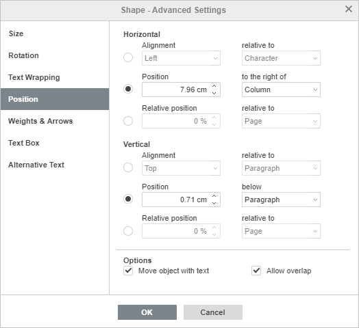
Tab Pozicija je dostupan samo ako izabrani stil prelamanja nije inline. Ovaj tab sadrži sledeće parametre, koji se razlikuju u zavisnosti od izabranog stila prelamanja:
-
Horizontalno - omogućava izbor jednog od sledećih tipova pozicioniranja autobloka:
- Poravnanje (levo, centar, desno) u odnosu na karakter, kolonu, levi margin, marginu, stranicu ili desni margin,
- Apsolutna Pozicija u apsolutnim jedinicama, npr. centimetri/poeni/inci (zavisno od podešavanja na Fajl -> Napredna podešavanja... tabu) desno od karaktera, kolone, levog margina, margine, stranice ili desnog margina,
- Relativna pozicija u procentima u odnosu na levi margin, marginu, stranicu ili desni margin.
-
Vertikalno - omogućava izbor jednog od sledećih tipova pozicioniranja autobloka:
- Poravnanje (gore, centar, dole) u odnosu na liniju, marginu, donji margin, pasus, stranicu ili gornji margin,
- Apsolutna Pozicija u apsolutnim jedinicama, npr. centimetri/poeni/inci (zavisno od podešavanja na Fajl -> Napredna podešavanja... tabu) ispod linije, margine, donjeg margina, pasusa, stranice ili gornjeg margina,
- Relativna pozicija u procentima u odnosu na marginu, donji margin, stranicu ili gornji margin.
- Pomeraj objekat sa tekstom osigurava da se autoblok pomera zajedno sa tekstom na koji je vezan.
- Dopusti preklapanje omogućava da se dva autobloka preklapaju ako ih povučete blizu jedan drugom na stranici.
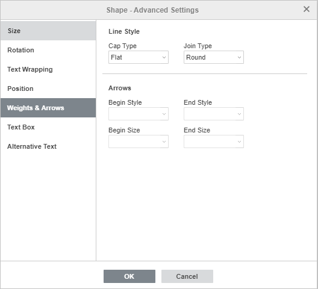
Tab Težine i strelice sadrži sledeće parametre:
-
Stil linije - ova grupa opcija omogućava podešavanje sledećih parametara:
-
Tip kraja - omogućava definisanje stila kraja linije, primenjuje se samo na oblike sa otvorenim obrisom, kao što su linije, polilinije itd.:
- Ravan - krajevi linije će biti ravni.
- Zaobljen - krajevi linije će biti zaobljeni.
- Kvadrat - krajevi linije će biti kvadratni.
-
Tip spoja - omogućava definisanje stila spoja dve linije, npr. utiče na poliliniju ili uglove trougla/pravougaonika:
- Zaobljen - ugao će biti zaobljen.
- Urezan - ugao će biti sečen pod uglom.
- Mitra - ugao će biti oštar. Pogodno za oblike sa oštrim uglovima.
Napomena: efekat je primetniji kod većeg obrisa linije.
-
Tip kraja - omogućava definisanje stila kraja linije, primenjuje se samo na oblike sa otvorenim obrisom, kao što su linije, polilinije itd.:
- Strelice - ova grupa opcija je dostupna ako je izabran oblik iz grupe Linije. Omogućava podešavanje Početnog i Krajnjeg stila strelice i Veličine izborom iz padajućih menija.
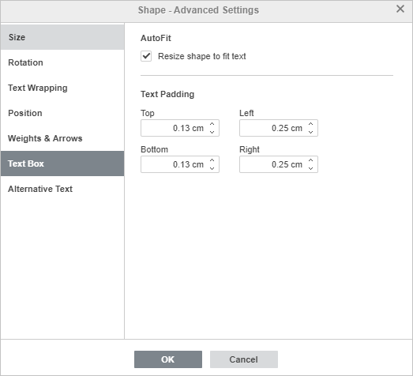
Tab Unutrašnji razmak teksta omogućava promenu unutrašnjih margina Gore, Dole, Levo i Desno autobloka (udaljenost između teksta unutar oblika i njegovih granica).
Napomena: ovaj tab je dostupan samo ako je tekst dodat unutar oblika, u suprotnom je on onemogućen.
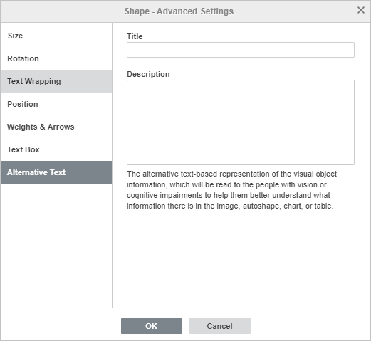
Tab Alternativni tekst omogućava definisanje Naslova i Opisa koji će biti pročitan osobama sa oštećenjem vida ili kognitivnim smetnjama, kako bi bolje razumeli informacije koje oblik sadrži.